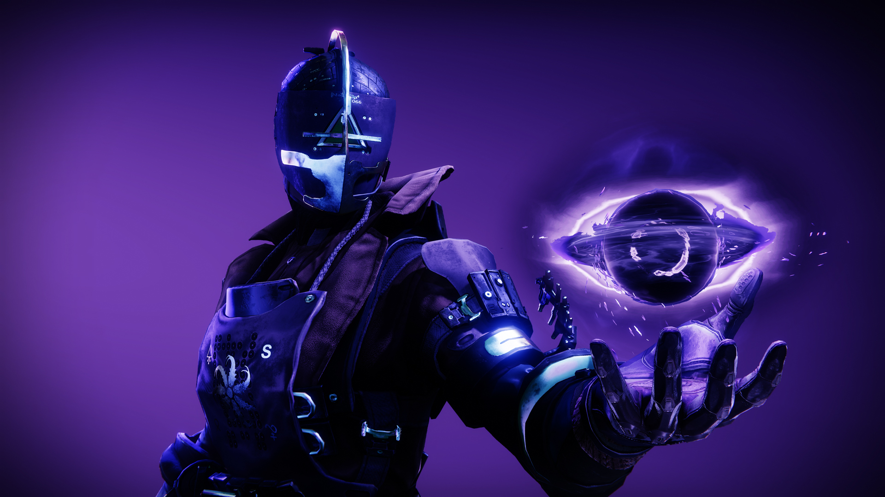
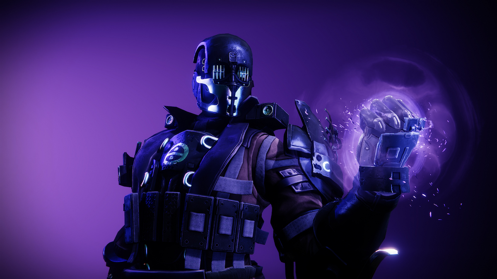

Vácuo
Arcano - Andarilho do Vácuo
"O espaço do vão define a forma. O intervalo antes da nota, a inspiração antes da palavra, o espaço branco na página."
Um frio se insinuou no ar, e eu ergi a cabeça, interrompendo os estudos. Aquela inércia; a calmaria tensa antes da tempestade. Uma emboscada me aguardava, eu tinha certeza. Não restava tempo para me perguntar como minhas defesas tinham falhado, ou mesmo para ponderar como tinham encontrado a biblioteca secreta para começo de conversa. Eu tinha acabado de tirar os olhos daquelas palavras sábias a respeito do vácuo. Agora, eu teria que dar os primeiros passos rumo a ele e torcer para não cair no abismo
"Peguem ela" bradou o chefe dos rapinadores. Inimigos determinados a me destruir irromperam de cada janela. O tempo se distendeu à minha frente, e, com um pensamento, eu já estava no centro da escaramuça. Uma bocarra escancarada e celestial dreanava a vida dos meus inimigos. Eu me firmei: o poder do vácuo se manifestava às claras, mas aquilo não era toda a essência dele.
No instante seguinte, a realidade voltou ao ritmo normal num estalo. Eu estava sozinha de novo. Os intrusos nem tiveram tempo para compreender o que lhes acontecera. Eu mesma sabia pouco mais que eles, porém discernira uma verdade fundamental.
Um passo no vácuo é um passo naquele vazio capaz de sustentar o fardo.
Caçador - Predador Noturno
Acho que não consigo comungar com o vácuo de estômago cheio. Eu preciso estar com fome, e muita, para atingir o efeito máximo. Começo a sentir umas pntadas e é ai que ouço, tipo uma voz sussurrando atráves de mim. Quando descobri isso, pensei que nunca fosse poder trabalhar de manhã; afinal, o café da manhã é a refeição mais importante do dia. Mas cá estou eu, em plena alvorada, em cima de uma árvore velha e enorme, sonhando com meu próximo lanche. Já passei por tocaias piores, mas, quando se trata de pagar uma dívida com um bandidão, o simples fato de ter um lugar para sentar já é vantagem.
Estou de olho no alvo há dias. O Kell finalemente está tranquilo e comfortável, dormindo ao ar livre e cercado de serviçais. Achei que eram a última linha de defesa, mas ainda não me notaram. Parece que é difícil encontrar bons empregados.
Eu já teria arriscado o disparo há horas, mais a ideia é que eu dê um tiro de aviso antes, para que ele saiba o que está por vir. Assim, ele "desencarna sabendo quem o pegou". Os Senhores da Guerra adoram passar esse tipo de recado, e não haverá ninguém para recebê-lo se ele estiver dormindo. Esse cara aqui só sabe dormir. Da até inveja.
O que me lembra que descobri outro truque para me dar bem com a bocarra escancarada de nada que chamamos de vácuo: exaustão. Quando eu começo a adentrar esse crepúsculo, aquele em que não sei se já dormi ou continuo alerta, ai eu sinto a ausência. Chega a dar para tocar. Acho que não interessa se é literal ou metafórico. O vácuo gosta quando eu estou vazio.
Ele está se mexendo. Hora de terminar o serviço. Eu disparo uma rajada na cabeceira da cama. Vem o típico som estranho de aspiração; o coitado tenta evitar, mas não tem a menor chance. Ele olha para os lados, procurando frenéticamente pelo atirador, e, então, a ficha dele parece cair. É a minha deixa!... Pá, pronto. Isso eu não consigo fazer de barriga cheia.
Titan - Sentinela
"Eu sou a muralha que detém o avanço da Treva... Eu sou a muralha que detém o avanço da Treva... Eu sou a muralha que detém o avanço da Treva..."
Repito essas palavras em meio aos destroços. Pilhas fumegantes, terra queimada, os guerreiros e seus espólios. Eis a vitória: deveria ser o momento em que tudo se encaixa. Só sinto o vazio.
Ninguem pensa nos Titãs como meditadores, mas não consigo pensar em provocação melhor do que a desaceleração pós-combate. Tudo o que eu sou está atrelado à batalha. E, quando ela termina, o próprio espaço desaba à minha volta. Nos velhos tempos, eu ficava lá, agonizando. O impulso de escapar daquela sensação me devorava, então eu inventava um montivo para começar alguma coisa, qualquer coisa, só para ver as faíscas voando. Agora... eu medito.
Com o tempo, aprendei a levar meus inimigos a essa mesma angústia. Quando não se está preparado, o peso da sua própria insignificância medida em relação à vastidão do cosmo pode ser debilitante.
Ainda tenho que confrontar o silêncio após a glória; eu sinto a natureza do vácuo com força total nesses momentos. Eu comecei, acho, a ansiar por eles.